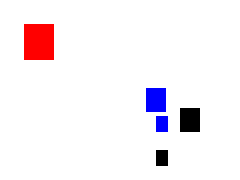
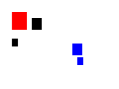

Identical original PDF, 72 DPI, white background. The two black glyphs move back to the saved text and line positions after Q. PDFium and PDF.js follow the corrected rule; the pinned MuPDF retains the older behavior. Rectangular glyph art was independently authored.


Pass threshold: all 41,540 preselected safe pixels have RGB channel error at most 1 and alpha exactly 255. Before: 1,088 failures, maximum error 255. After: zero failures and zero error. A two-unit edge band is excluded. This is a bounded case result, not universal renderer parity.